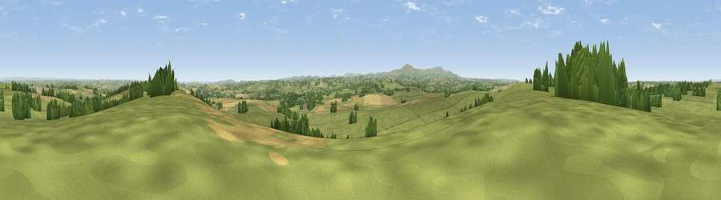

Viewpoint near North Tawton
#12718 in England · top 17% of its area beats it · near North Tawton · access?Where it is
The exact computed spot (SS 68375 02475). Click the marker for map links.
Public access: no public right of way or access land is recorded at this exact spot — it may be on private land. Computed from Natural England's CRoW access layer and OpenStreetMap rights of way — not the legal definitive map. Always verify locally.
The view, rendered

A 360° render of this exact spot computed from the terrain model, tree cover and land cover — summer colours, afternoon light, calibrated against photographs of famous viewpoints. Real trees, hedges and buildings will differ in detail.
The panorama
Grey silhouette: terrain skyline in each direction (720 bearings, Earth curvature and refraction included). Dashed green: skyline with trees (+15 m) and buildings (+8 m) as obstacles. Blue strip: how far the ground is visible on each bearing.
Where the view opens
Wedge length = distance to the farthest visible ground on that bearing (vegetation-aware). Rings at 10, 25 and 50 km.
What fills the view
76% grassland · 14% cropland · 9% woodland ·
Angular shares of the visible panorama (visual magnitude), not map area. Landscape diversity 0.32 (0–1 Shannon).
Key numbers
More beautiful places nearby
The staircase of upgrades: each row has a higher view potential than everything closer. Driving times are estimates from straight-line distance, calibrated against real road routing — check an actual route before setting out.
| Place | Direction | Drive | Score |
|---|---|---|---|
| Viewpoint near Bondleigh | NW · 5 km | ~11 min | 64.0 |
| Viewpoint near Whiddon Down | S · 9 km | ~18 min | 67.0 |
| Viewpoint near Whiddon Down | S · 9 km | ~19 min | 67.5 |
| Viewpoint near Sticklepath | SSW · 10 km | ~20 min | 73.5 |
| Viewpoint near South Zeal | SSW · 12 km | ~22 min | 75.0 |
| Viewpoint near Drewsteignton | SSE · 15 km | ~26 min | 75.1 |
| Butterdon Hill | SSE · 15 km | ~28 min | 76.4 |
| Yes Tor | SW · 16 km | ~28 min | 78.5 |
50.80683, -3.86945 · source: screening · position refined by local search. Computed location — check access rights before visiting.